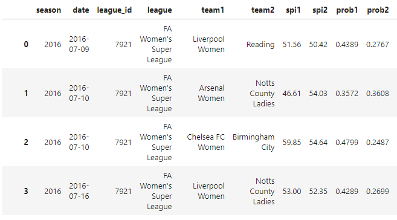

by Garikayi Tarambiwa

This dataset was obtained from fivethirtyeight a data-driven news website, founded by statistician Nate Silver, known for its deep dives into opinion poll analysis, politics, economics, sports, science, and lifestyle and can be accessed here. 
Fig 1. Sample of Dataset.
This code block is designed to analyze and visualize the average Soccer Power Index (SPI) by league. Specifically, it seeks to determine which leagues, on average, have the highest SPI.
Fig 2. Python Script to show SPI bar plot
Firstly, it separates the original DataFrame into two DataFrames: one for 'team1' (with the corresponding SPI and league) and another for 'team2' (also with the corresponding SPI and league). Both DataFrames are then combined into a single DataFrame, all_teams_df. Next, it computes the average SPI for each league by grouping all_teams_df by the 'league' column and applying the mean function to the 'spi' column. The result is a series, average_spi_by_league, where the index is the league and the value is the average SPI for that league. The average SPIs are then sorted in descending order to identify which leagues have the highest average SPI. This sorted series is then transformed back into a DataFrame for further processing.

Fig 3. Visual Representation of SPI rankings according to league
Next, I analysed the South African ABSA Premier League, creating a clear visual representation using a bar plot.
Fig 4. Python Script to show
By splitting the original DataFrame into two - one for 'team1' and another for 'team2', each associated with their SPI and league - and subsequently merging them, the code generates a comprehensive DataFrame, all_teams_df. It then calculates the average SPI for each team across all leagues and isolates the data for the South African ABSA Premier League. The resulting SPI averages are ordered in descending sequence, spotlighting the teams with the highest average SPI.
Fig 5. Bar Plot showing SPI across the South African ABSA Premier League
The takeaway from this analysis is that, over the period from 2016 to 2022, Mamelodi Sundowns emerges as the top team in the South African ABSA Premier League given its highest average SPI, while Moroka Swallows, with the lowest average SPI, is identified as the weakest team.
Next, I analysed the performance of the calculates and visualizes the average Soccer Power Index (SPI) per season for the South African ABSA Premier League using the python code below.
Fig 6. Python Script to show Bar Plot of average SPI of the South African ABSA Premier League from 2018 to 2022
Each data point on the plot is annotated with the corresponding SPI value. The analysis indicates a downward trend in the average SPI over the seasons, suggesting a decrease in the quality of South African football over the years.
Fig 7. Bar Plot of average SPI of the South African ABSA Premier League from 2018 to 2022.
The Jupyter Notebook to open the full python script for this project can be found here.